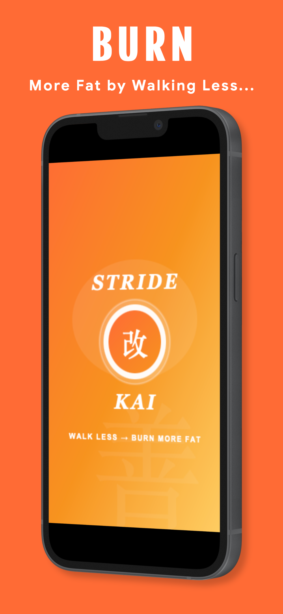
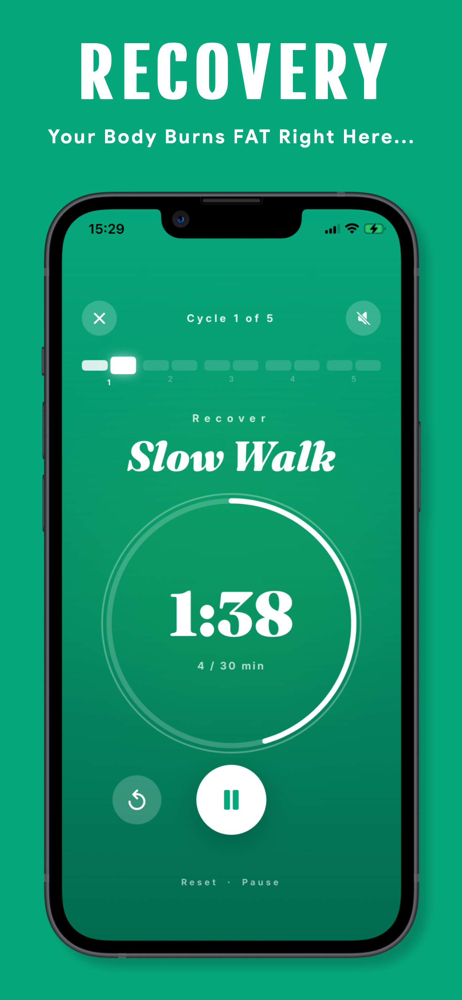
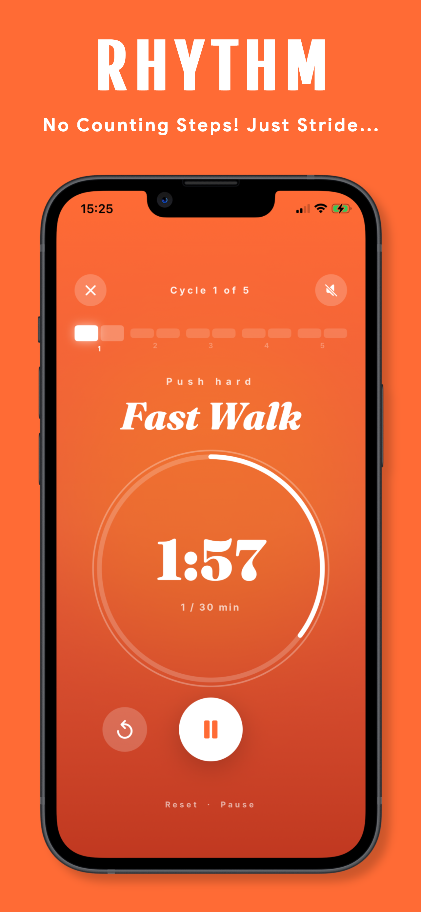
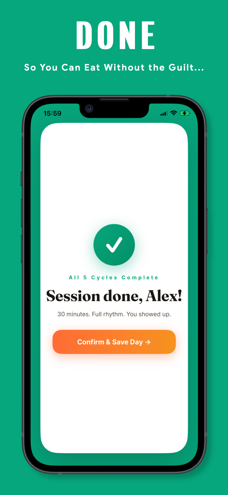
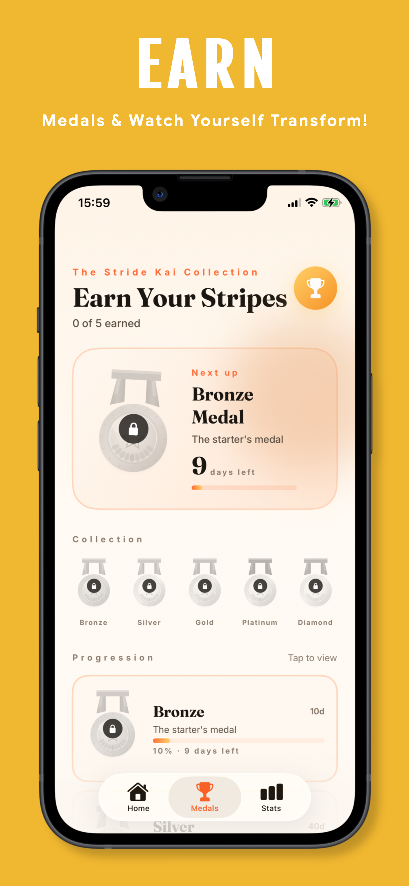

The Japanese Walking Method
The method developed by Dr. Hiroshi Nose at Japan's Shinshu University.
30 minutes. Alternating rhythm. Zero step counting, ever.
Try it free for 3 days. No commitment.
Available now on
The uncomfortable truth
Think about the last time you checked your step count at the end of the day and felt good about yourself. Maybe you hit 9,000. Maybe you scraped 10,000. You felt like you'd done something.
But here's what your watch was actually counting. The steps you took making breakfast. The shuffle to the bathroom at 2am. The twenty paces to the kettle and back. The fidgeting while you stood at the kitchen counter. Your smartwatch cannot tell the difference between walking for fat loss and walking to the fridge. It counts them all the same. It gives them all the same credit. And at the end of the day it tells you that you were active, when really you were just alive.
That false sense of achievement is one of the cruellest tricks in modern fitness. You feel like you earned it. The scale says otherwise. And instead of blaming the broken system, most people blame themselves.
The 10,000 step goal was invented in 1965 by a pedometer company trying to sell more devices. Not a doctor. Not a researcher. A marketing team. That number has never been proven to burn fat. It was designed to sell a gadget, and for 60 years the fitness industry built an entire ecosystem of watches, apps and guilt around it.
Walking slow for a long time barely touches your fat stores. Your body adapts to it within weeks, your metabolism flatlines, and you end up burning less than you think for more effort than you want to give. The harder truth is that the problem was never your effort. It was always the method.
Real app. Real screens. This is exactly what you get. ↓ See it in action.
See exactly what you get
Your phone stays in your pocket. Stride Kai handles every second.

The app
Fast walk phase
Slow walk recovery
Medal collection
Session completeThe Method That Changes Everything
Dr. Hiroshi Nose at Japan's Shinshu University discovered something counterintuitive and devastatingly effective: alternating fast and slow walking at exact intervals forces your body into a fat-burning state it simply cannot reach through steady plodding.
His participants burned more fat, dropped blood pressure, lowered cholesterol, built real leg strength, and formed habits that actually lasted. All in 30 minutes a day. No gym. No equipment.
The method itself
Dr. Nose's research identified a specific rhythm of fast and slow walking, at a precise duration, repeated a specific number of times, that keeps your body in a fat-burning state for the full session and beyond. Not a rough guideline. The exact combination his studies proved most effective. Stride Kai has that built in. You just press start.
Walk fast at the intensity Dr. Nose's research identified as the fat-burning threshold. Hard enough to matter. Sustainable enough to repeat.
This phase is where most people are surprised. Slowing right down isn't rest. It's when your body shifts into peak fat oxidation. The slow walk is doing more than the fast one.
The number of cycles isn't arbitrary. It's the specific count that fills 30 minutes and produces the results the research showed. Stride Kai handles the counting. You just walk.
Every session adds to your streak. Bronze, Silver, Gold, Platinum, Diamond. Not a participation trophy. Proof of the person you are becoming.
Try Stride Kai free for 3 days on the annual plan.
No charge until your trial ends. Cancel any time.
Everything inside Stride Kai
Your phone stays in your pocket the entire session. Stride Kai tells you exactly when to push and when to recover, no screen watching required.
Every session you complete builds your streak. Showing up feels like winning, because it is. Miss a day and you feel it. That's the point.
Bronze, Silver, Gold, Platinum, Diamond. Five tiers earned through consistency, not perfection. Hard evidence of the person you're becoming.
Timed to protect your streak on your busiest days. One nudge at the right moment beats ten ignored notifications.
Calendar view, total walks, longest streak. Watch your consistency become your identity, one green day at a time.
No pedometer connection. No arbitrary targets. No guilt. Finish the session and you're done. Full stop.
Kai, Improvement
The Research Behind It
Dr. Hiroshi Nose published his interval walking research after two decades of clinical study at Shinshu University in Japan. The results were replicated, peer-reviewed, and clear: alternating fast and slow walking outperforms steady-pace walking on every meaningful health marker.
Stride Kai implements his exact protocol. Same timing. Same structure. Same results, without a lab coat or a treadmill.
The 10,000 step goal was invented in 1965 by a pedometer company trying to sell more devices. It was never based on science. Sixty years later, millions of people are still paying the price.Stride Kai exists to fix that.